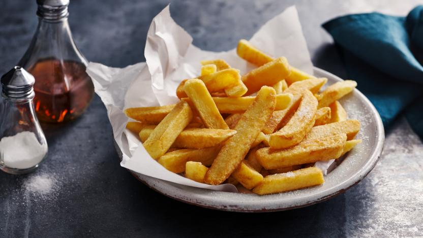

Triple Cooked Chips

Description
These triple cooked chips are the crunchiest fries you'll ever eat. Season with
salt, vinegar, or onion powder, and they're sure to hit the spot.
Ingredients
- 1 large potato, peeled and cut into chips (approx. 2x2x6cm)
- Sea salt
Steps
- Wash the chips in cold water to rinse the starch away.
- Move the chips to a pot of cold salted water and begin to boil. Once boiling, set a 10 minute timer.
- Dry the chips on a wire rack in the fridge.
- Once dried, fry in oil at 260 degrees Fahrenheit for 7-8 minutes.
- Once again, dry in the fridge.
- Fry once more at 350 degrees Fahrenheit for 4 minutes or until crispy and golden.
- Toss the chips in some sea salt or a seasoning of your choice.